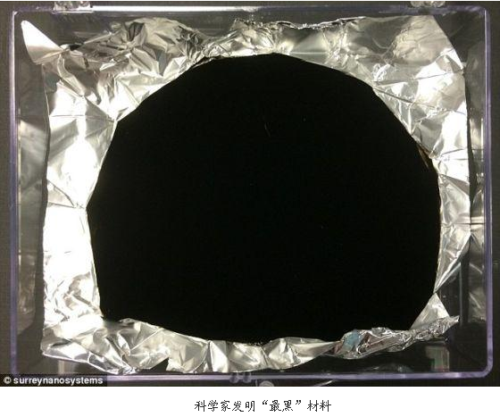
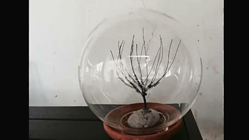
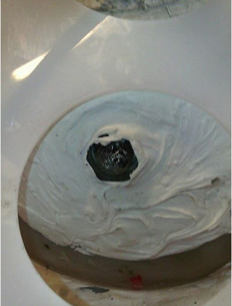
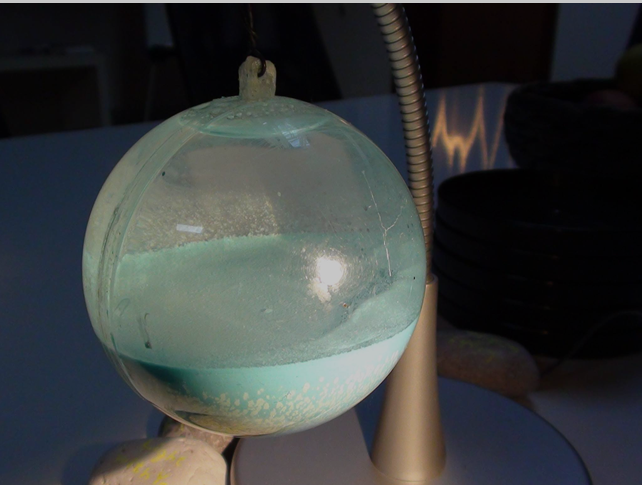

我们现在进行实验在一定条件下，需要的时候，我们就可以快速的提升场体，这是下一部分我们要在这里计划完成的。当结束的时候，像往常一样，你们要把知识传播下去，这就是为了你们需要去做的。所以在某一方面，你如果看到在实验室中的地面上的反应器现在所设置的结构状态，我们开始了一个是星体造型，然后我们加入了各种的系统组合。我们有了第二个星体组合，放在了第一个组合的旁边。现在我们实际上我们已经有了第三个星体造型的组合，加入到了目前的设置的反应器组里。希望能够在假期之后很快的，我们将运行那些小的反应器。在这个阶段之后的话，估计希望在差不多圣诞节前后，我们就可以有反应器，可用于医疗系统中。我现在还不清楚，昨天，我们以一种非常好的方式对反应器装载充入：我们每一个人负责一个反应器，比如昨天做为实验的一部分。不是像上周和以前那样我们一个个的对反应器进行装载。我们通过设置一种中心控制的输入系统，我们现在给它们按照一个顺序，一个是充入氢气，另外一个反应器重复氦气，然后再另外一个充入氮气，还有另外抽真空。所以我们开始产生这种动态的等离子体，根据反应器核心之间这种多样性的不同，所以实际上我们把它叫做一个协调的系统。这个就是当创造原子结构的时候的主干，当质子，电子，中子加入的时候，所有的结构就像各种星系，在宇宙当中处于这种动态的状态下，所以我们昨天就以这样的方式开始了，我们是怎么做的呢。比如，ARMEN就操作一个反应器，然后它对反应器抽真空后加入了氮气，哦，对不起。是氢气！当他结束了加氢气之后，我开始了在我的反应器中加入了氢气，这个时候MARKO把他的系统抽入真空，然后准备加入氢气，当我结束之后，他就开始充入氢气了。这个时候ARMEN已经开始装入氦气了，然后我开始装入了氮气，按照这个顺序然后YVAN开始了，所以我们就用相同的一套程序。所以当轮到YVAN的时候，ARMEN已经开始了下一步，所以我们一直使得这4个反应器处于这种动态下，因为现在很多人在想怎么弄出动态的等离子体，就是在没有电机运转的情况下，我们就是这么操作的。我们现在达到了等离子体状态，通过创造不同条件的成分，通过创造在每一个反应器中的不同的等离子体的这种流动性，然后每一个反应器的磁引力场和其他的都是连接在一起的。它们可以影响其他的反应器，所以现在我们就达到了我所称之为相互作用的磁场流动的集合。我们不需要用到电机来使得它运转。现在我们达到了这种动态的等离子体，并且我们把它给限制住，这是一个特别特别棒的消息。我们已经有了一直乌鸦粘在顶部高唱了,一直都是很好的消息！所以这整个系统是一个动态的。（突然笑了）
现在我们创造了这种动态的等离子体的环境，这样他们就发现了整个的系统，我们所注意到的并不是说我们发现了这种可以限制等离子体的环境，就像我上次告诉你们的，我们达到了这种起飞前的状态，我们想让反应器能够起飞。我们努力想让它起飞但是它没有起飞，但这样我们就正好看到了其他的各种现象，当我们在起飞前改变条件的时候。这些反应器就不会停止。所以所有这些反应器在假期当中它们都会继续运转，所以当我们回来之后如果有什么化学上的失败的话，或者像原来开始这样的状态，目前发生的就像我之前跟你们说的，我们把纳米的线连接起来，就是从反应器的南极接到了反应器的北极。到昨天位置，我们看到了这种作部分的操作，从边界的反应器产生的场体是稳定的，所以这个意味着没有场体进入等离子体，所有的场体现在都是直接从边缘反应器的等离子体到中心反应器的等离子体。然后从中间的反应器上就可以有一个直接的垂直的飞升效果，所以我们现在做的就是在逐步增加这种等离子体的压力。
从现在开始，我们不会容易达到这种平衡点，如果我们达到了这个平衡点之后我们就达到了飞升状态。我们现在所做的就是说把各种驾驶员都放到比较安全的状态，当这种飞升状态出现的时候，我们实际上就可以放上椅子到这个台面上，然后把ARMEN锁到椅子上坐坐看能发生什么，所以我们希望能进展的更加深入。但是科学上来说，我们已经准备创造外壳，我们已经准备创造原子结构的环境，完整的原子结构。在其中的等离子体磁场。现在这三个反应器在对中心的反应器进行给予的话，到目前为止就是昨天的时候，当中心核的场体释放场体给边缘的反应器核心的话，就发现了这些边缘的反应器核心和中心反应器核心的连接。我们从中心核可以看到往上提升的力量，现在我们看到边界的场体已经完全停止了。所以这种相互作用的反应完全是在几个反应器之前进行的。这是我们达到的一个最主要的成果。现在我们已经完成了单独的一个单元在这四个反应器之间，它们之间就相互的维持住这种状态。当场体从中间反应器的核心释放出来的时候，这个场体就会循环的回到它的底部充入进去，然后就会观察到边缘反应器内的等离子体增加。然后这种场体就会回来，所以这个“再投喂”进入到所有场体存储起来的过程已经开始了，所以这种磁引力场的储存过程已经开始了。当我们进行到下一步的时候，就是我们在昨天所看到的，像YVAN所解释的，我们在这个过程中加入了氩核，在这个情况下，在这里面氩核实际上吸收了所有减少的等离子体。我们减少等离子体的部分原因是由于我部分的理解它是如何发生，为什么会发生。但是就像我告诉你们的，我们总是在从这些事情里面在学习东西。这是在出现一个紧急情况下，我们需要关闭或者降低它的强度。所有我们需要做的是就往反应器内加入氩气，所以这种情况下我们就可以比较容易的处理经过涂层的反应器，就是利用氩气来使得场体的强度下降，通过注入氩气的方式你就降低了它的力量。同时，这些都是这整个过程的一部分。另外一个事情就是我们一直在忙着的就是，现在就是关于生产，凯史基金会下一布在这里进行的，就是因为我们看到了更多我们学到更多之后，对于我们来说下一步就是，把这项科技作为商业可以让人们应用它，我们就要走下一个步骤了。我们还在准备在假期之后让另外四个反应器加入进来，这么做原因就是，我们在这里所拥有的你们看到的这个结构，因为你们一直就不能够明白就在实验室为什么要进行这样结构的设置，你们也就不会明白这么设置这么做的目的：就是我必须用一种方式来解释你们才能够明白，因为我把这个向知识寻求者们进行了解释，你们不知道这个屋子里面有多大的湿度，举个例子，你放了一个盘子然后你就可以看到有多少水分在盘子上面，然后你就可以知道房间里面有湿气。当你看到盘子上面有水珠的时候你就会知道屋子里面有湿气。这以为这湿气就在其中，你已经创造了一个环境来产生这些水滴。下一个阶段我们的目的是要加入宇宙社区了。我们在试图教你们加入宇宙社区的条件是什么。试图在教你们和展示条件是什么，你们认为你们是孤独的，但实际上你们并不孤独。所以在下几个星期或者几个月中，就是在假期之后，我们会设置这些反应器形成一个环境在一个盒子里面。这样就可以使得我们人类第一次的可以意识到他们在这里，但是我们一直对此不知情的。所以我们做的就是把这个盘子放到磁引力场环境里，在这个像盒子形状的里面。我们人类往里面看就可以看到其他生命的存在，在其他的维度里面。就像你们大家知道的，我们在过去那几周创造了物质。在等离子体反应器当中我们创造出了物质。
当我们在从反应器中取出的管子里去取出了样品，但是现在我们创建了下一个部分，我和知识寻求者们解释的就是，现在很多人都在寻找飞升的效果，而我不是在寻找飞升的效果，我们只是在寻求的就是这个设置可以让知识寻求者们都明白这个系统就是：现在我们在实验室这个框架当中创造出了这种相同的条件，对于人类来说第一次可以意识到其他在宇宙世界当中的造物在我们人所处于的环境当中。所以我们现在力图把知识扩展到你飞行进入到太空之前知道你知道那是到什么，你要理解如何期望能过看到，并且要知道怎么样做才能控制，所以当我们达到了16个反应器的组合的时候，我们就会给16个反应器在实验室中做成一个盒子的框架。然后我们可以改变这个环境。就像我们所说的，当你看到另外一艘太空飞船的时候，你永远不走进去，因为你不知道那里面的设置，因为他们的设置是为了他们的生命所适应的环境，就是什么是对他们合适的。所以我们现在要在我们的环境中创造出一个环境，这个环境可以适合他们，虽然在我们的实验室环境中，但是是作为人类的客人。这是我们下一步就要做的了。下一步我们就要扩展我们的知识，我们完全知道他们的存在。但是再一次的发生了，就像凯史基金会已经使得它们距离我们很近了，但是我们从来都不知道他们是什么，但是我们已经完成了。所以这个目的伴随着我们力图把这个科技推向进一步的发展，用更多的反应器，这样就可以制造一个平衡的环境。就在这样一个立方体的空间内。我们创造这个条件来欢迎这些存有。他们不是新的，但是对于我们来说我们能够以固态的形式或者以一种可视化的方式看到他们可以认识他们。这个就是我们现在在努力要往前推动要做的和你们所期望的。你的期望看到什么，如果我们不能够在实验室里创造这个条件，我们就会在太空里面进行展示怎么样才能够做到，这就是我们如何在我们的环境中和在太空当中能够知道其他的生物存在。这个对于我们人类来说都是未知的知识，但是我们现在打开了这部书。所以慢慢我们会告诉你们下一步要来到的是什么，所以下一步会在下面差不多6-12个月的时间内，就是要能够制造出盘子。所以人类可以看到这个湿度，就是以物理的形式作为一个个体。然后可以具有智能判断，然后可以作为朋友。我们凯史基金会设立出的目的就是向慢慢向人们介绍整个的实像。我们已经具有这个能力，我们今天就可以展示出来，但是那样人类是不会明白的。就像可口可乐瓶一样，你们会想知道怎么能创造出纳米材料。但是现在所有的人都可以制作出纳米涂层，然后都能够明白。并且应用可以和平的应用。我感到最悲伤的事情就是在上一周，这些人是多么的愚蠢，他们利用我们释放出的USB盘里的技术，他们应用纳米材料，他们清楚的在用我们的技术。在法恩伯乐（英国军事航空展举办地）进行军事展示它们可以做什么。我们知道他们是怎么做到的，我们知道军事上的应用是什么。但是我们是用一个非常简单的方式来显示这是一个多么简单的技术，你们这些人可以用它来产生能量。而其他人把这些都变成了在法恩伯勒的军事上的应用了。就像你们很多人所知道的，我们的国际工作开始正好就是10年之前在法恩伯勒（英国航空展举办地）开始的。因为那些愚蠢的人他们作为军事上的展示，现在我听到了这些给我发电子邮件的人，他们就要展示这种外表上显得最黑色的材料。我们曾经对他们解释这些材料是怎么工作的，这些人甚至还都不知道这个材料是怎么样工作的。他们只是测量一些东西，就像你们知道的那样，

我想JOHN之前已经把这个照片在几周前展示过了。就是那些圆环（RING）的区域是特别特别黑的。这是因为有太多的层在上面，有缝隙在层的里面，物质会产生出这种场体，就像我们解释的那样会吸收在涂层中的电容的场体，这些人不会将这些材料用于在战争冲突上，但是你们不会知道这个是怎么制作的，所以这就是我说的，这个知识技术可以被用于两个方面，现在你们大家都看到了。所以这个就是当我们释放科技的时候会发生什么，我们知道如果应用它的话，我们知道会有什么样的应用。我们知道怎么样才能够更加有效，在我的所有的教学当中，你们可能都听到过我亲爱的兄弟德克讲过，我们很多年前知道了这些性能。当我和德克去参加了这个在欧洲的会议时候，我们到了在布鲁塞尔的欧盟中心，这个会议我是被邀请过去的，我们去了那里。（01:38:14
we went there and there put ?????system and they told me that this is like
???? so natural ??obsorb all the
fields）吸收所有的场体，所以我们知道我们可以用这种材料制作出黑色的盒子。很多年前我们就知道了，我们知道这个应用。这个装置就可以被用于军事和恐怖装置。就是为什么我们和政府们工作，他们就意识到了怎么样来探测到这种材料。即使它被某些人使用了，因为（01:38:40
because ?? is ?? if used in the wrong way
）事实上我们是用在错误的方式上，所以现在我讲清楚了它的用处，现在他们有些人以错误的方式在做这项工作，我们就和政府在进行着工作可以快速进行对策你可以如何探测它，我们并不是说把所有的知识都教给大家，但是另外一方面是有方法可以探测纳米材料的。即使它可以吸收所有的射线，现在你看到了这个技术的应用，我们释放了U盘，
他们现在展示它们的结果，整个实际上就是和我们的步骤是相同的。但是他们并不告诉别人他们是从U盘里偷窃了这些技术，但是很快他们的手就会放开，所有的人都会知道怎么样来制作这个材料，这个并不是主要的突破，主要的突破就是已经有几百万人我们已经得到了怎么样制作的说明。看视频的话就会知道怎么样制作它，现在有其他的问题吗？
JOHN：我想在比利时也听一下到底是怎么做的。
KESHE：谁在讲话？
JOHN：是JOHN。
KESHE：JOHN你在哪里呢？HELLO。
JOHN：我在比利时呢，我回到了这里，我的那些陶瓷反应器现在要用做成甘斯材料的反应器，用于平衡这个系统，我非常高兴事情在这方面这样进展的，我有一个很想说的小事情，我们还有一些事情要做。
KESHE：实际上我今天早上还在看了JOHN的反应器，电机是完美的，因为现在的话它的行为就像一个电子一样。
JOHN：好的（笑了）
KESHE：它具有一个好处就是我昨天和手术医生所讲的就是，当你各处动它的时候它实际上它的行为就像一个电子，所以从某方面来并说没有把这个电机及时的放在那里。现在我们放入了另外的一个替代品，就可以使它能够展示出不同的特性。这就是它经常怎么样工作的状态，非常感谢你。这个工作做的特别漂亮。这个就是认识教会了我们认识事情整体的一部分。JOHN继续讲下去。
JOHN：所以我的理解就是，这些甘斯反应器它们之间的连接。同时比较有意思的是，我们看到了它们更好的行为，这个密封和旋转的。我们开始能够看到，并不是用眼睛的那种像看物质的状态来看，就是能够看到我的明白这个感觉，我就得到了这些理解。通过我们这种看待得到数据的方式，我还有一些问题。在我的角度来看，我在照片上看到的进来的场体的最大的数据，就是这个场体进来了之后，只是有时候会进入封锁的状态，仔细看这些数值，就是这些不同的场体的数字。可以清楚的看到场体，整个球体的数值。
VINCE：JOHN，你先等一下。太空学院那边好像断联了，ARMEN和太空学院同时都掉线了。
JOHN：有的时候确实是有这些问题。（笑）
RICK：我在试图把他们接线进来。其他的人也掉线了。
JOHN：其他人也掉线了吗？
VINCE：不是的，只有他们掉线了。
LUCYANO：我听你们的很清楚。你们的声音听起来很清晰，所以可以到GOTOMEETIGN上面。
VINCE：谢谢。
LUDMIL：我看到了MAREK也在这里的。我不知道他现在在哪里。
JOHN：他们可能是因为连接的问题。他们那边太空学院的互联网总有一些问题。
VINCE：你离开之前你气候怎么样？
JOHN：（听不清）
RICK：JOHN，你可以继续说了。我们就这样等着他们。
JOHN：所以我想有更好的理解，这些数字所提供出的图像。不是说我们要去看那个最高的峰值，我们要去看所有的这些记录下来的数值，非常有趣的就是像你们所知道的，这个最主要的数值，这个矢量还有长度，就是我们所拥有的这个场体，现在这个效果。这样你就可以有BXBYBZ三个轴线上的数据，这三个不同的数值。在这三个方向上进行测量，（01：46：42values
are ？？？ negetive ,when you
look）但是当你看这些场体阻塞的情况发生的时候，你可以看到比如它们会有不同的数值，比如X上的数值，从左到右，当你看中间核心的时候，X的数值可能在0附近。哦，对不起对不起。这个数值来自于旋转。
VINCE：对不起，JOHN，请稍微停一下。
LUDMIL：ARMEN现在发过来了一个信息。
ARMEN：你好。
RICK：HI，ARMEN。
LUDMIL：好的，伙计们你们现在回来了。
KESHE：我们都是在用笔记本，我们现在ARMEN的电脑上面，不是在基金会的电脑上面。你能打电话连接一下凯史基金会账号吗？
RICK：现在太空学院在上面呢。
KESHE：是的，我们还没有去申请。
RICK：显示在我的SKYPE上是在的。我要再连接一下吗？
KESHE：是的，再打一遍。看看是不是整个系统崩溃了还是就是我们这边出问题了。
RICK：好的，只是你们
KESHE：好吧。我们现在在这里了。JOHN继续说吧。
JOHN：是的。我想跟你们说这个数值出现的这种模式规律的时候，我们可以看到XYZ三个数值。就是一个值的范围区间，这些数值它们都有一个范围。这三个数值相互之间可能会完全不同，所以我们可能看到这些在XY上的数值。
KESHE：（小声在背景里嘀咕）对不起，因为ARMEN在跟我说反应器的事情。
JOHN：不管怎么说看到这个各种不同的条件下，这个是比较有意思的。就可以更好的明白为什么。
KESHE：今天早上不知道是谁发给我们甜点巧克力。继续吧。
LUDMIL：这样你们就能够睡出个美梦了。（笑）
JOHN：我们对这个有了更好的理解。所以他们之间的这种连接，我们可以有更好的系统，所以现在事情变的越来越好。所以我们现在处于一个比较好的阶段，可以比较容易的控制，增加或者减少气体。然后知道会发生什么，然后我们就开始明白了。所以那4个小的反应器还没有进行场体的实验，我们就离开了，我现在离开了，好像MARKO也离开了。我正在准备小的核心。
KESHE：我会告诉你那些宝贝都发生了什么（笑）
JOHN：谢谢你。
KESHE：ARMEN说给它们喂奶，不会有问题。（JOHN笑）还有什么问题吗？
LUCYANO：早上好，凯史先生，这是LUCYANO，我有几个问题，可能大概三个吧。（KESHE笑：继续吧）是的，只问三个问题！第一个就是相当简单的，你们曾经连接这些反应器用普通的铜线，它们并不是纳米涂层的。
KESHE：不是，不是。它们是纳米涂层的。我们是用涂层过的，我们要用涂层来从一个反应器到另外一个反应器传输等离子体的磁引力场的。当你和等离子体打交道的时候，你不能够像物质一样，用这种物质来进行输送。所以它们是纳米涂层的。所以你如果是看照片的话。（被LUCYANO打断）
LUCYANO：是的。所以我的问题将会是这样的，纳米涂层如果在空气当中，它就会被破坏掉。你有任何物理上的（KESHE插话）
KESHE：为什么？为什么它们会被破坏掉？即使你有氧化的话，也只是上面的几层被氧化，但是你有上千层在那里一层层叠落在上面，所以你还是可以把等离子体通过它们层之间来进行传递。
LUCYANO：我记得很清楚，在福岛上你说如果纳米铜线不用的话，你要把它们保持在密封的盒子里面，直到你应用它们。
KESHE：如果你不用它们的话，不要忘记它们里面的孔洞组成的管道，我把它们叫做纳米管。纳米的线不会变成绿色的。他们只是在某些地方会变成绿色的。这些绿色的地方是因为这些缝隙和这些孔洞在那里的铜的界面被氧化了，但是并不是说整体的。我一直在说你不要碰它们，然后把它们储存在一个盒子里面。但是你不会把整个这个管子和线都变成绿色的，不会的。
让我给你解释一下，你问的这个非常好的问题。但是我要做的解释要更容易来让你明白，即使你把整个的电线或者把片整个的浸在盐水中，那也并不是说所有的这些缝隙，或者所有表面上的所有缝隙都会变成氧化铜的，在这些层之间的缝隙还有在表面上，就是在表面上它们会改变，所以并不是说整个东西都变成了氧化铜的。在空气当中的湿气，你一般来说不对得到那么多的饱和，我也没有看到那么多，总是说只有一个通道你看到了可能会变成了绿色。你得到了缝隙，等离子体就在这些缝隙的层当中改变，你现在处理的并不是物质.
LUCYANO：我领会的正确的话，当等离子体在两个反应器之间流动的时候，这个纳米涂层材料，叫我怎么说呢。
KESHE：就没有用了。
LUCYANO：就是没有任何作用。
KESHE：是的。你是对的。
LUCYANO：让我说完我的这句话吧，一旦你用纳米涂层的线连接2个反应器的话，因为等离子体的流动。这个会防止纳米涂层在缝中被破坏，为什么会这样呢？
KESHE：我不明白你的问题。
LUCYANO：让我再重新问一下，如果要用铜线的话，如果没有纳米涂层的话，如果这些线连接2个反应器，这个等离子体流动就像一个管子那样，然后就可以防止让我怎么说呢。
KESHE：它们是通过涂层之间，而不是说在围绕着层，
LUCYANO：是的，所以他们会很好的待在那，不会被氧化。
KESHE：不是，不是的。等离子体从一个反应器到另外一个反应器，是从纳米涂层中走过的，不是说在纳米涂层的周围隔离的通过的，氧化不会是来自最顶层的。氧化的是在纳米和物质的交界处进行的，非常像你出汗的情况，所以你看着它往上走。
（LUCYANO插句话）
KESHE：什么？请继续。
LUCYANO：基本上来说，在两三层之后，接触空气的部分会被氧化，然后这个氧化过程就停止了，然后氧化就会在界面开始进行？
KESHE：是的，是的。
LUCYANO：好的，谢谢。
KESHE：这个就是我们所看到的。
LUCYANO：好的，那现在我开始第二个问题。（第三次翻译截止01:58:50）
LUCYANO：第二个问题是有关于今天的照片，可能是ARMEN的反应器，我们看到了有一堆纳米涂层的线，下面好像有一大堆东西，可能是CO2的甘斯。
KESHE：你在说哪个问题呢？让我看一下你在讨论哪个照片。
RICK：你在谈照片是2-5-1-3吗？LUCYANO。
LUCYANO：我不知道，可能你还有其他的照片吧。
RICK：是像一个球，然后里面还有一些线的结构吗？（LUCYANO:是的。)好的，那我现在就把这个照片放到LIVESTREAM上了。

LUCYANO：基本上。
KESHE：你做什么了？ARMEN，让我看一下（突然大笑）你能把那个链接放出去吗？是在玻璃球里面吗？是那个玻璃球的那个吗？
RICK：是的。
KESHE：啊！这个是ARMEN，你知道ARMEN是纳米涂层的专家，所以他有很多自由时间。所以他就弄了一个灯泡。还有塑料的球体，你们可以看到。所以他就用了这些纳米涂层的线做了一个树，然后他把电线给涂层了，让我就奇怪他要拿这个做什么，他就把这个东西放在了里面像一个鱼缸，这个和我们的实验是没什么关系的，这个是ARMEN的这种创造性。这个跟我的工作是没有关系的。但是今天早上我告诉他当你进太空的时候你把这个球带着，你就可以跟他们说我们在地球上有树，就是这个样子的。（大家全笑了）
LUCYANO：是的，我在想他在地下封闭起来是不是一些甘斯呢？
KESHE：不是，不是的。就是他用胶粘到了石头上。他从地上拿着这个石头，就像你去月亮时候你你拿了个石头那么做一样，
你如果看细节的话，就是有一些像弹簧线的在上面，这个本来是像树上的叶子一样，但是它掉到底部去了。它们实际上只是纳米涂层的。
RICK：所以在合适的环境下可能有一些叶子就会从树里长出来，也许。
KESHE：嗯（大笑）这个就不知道了。这个要有ARMEN的DNA，可能在上面长出来ARMEN。
RICK：我也这么想。正确的环境会是什么样的呢，会长一些比如有机的东西在上面。
KESHE：就是盐。
RICK：噢！
KESHE：所以这种盐，咸的空气是条件。（KESHE大笑）是的，也许会那样。现在人们都在度假到海边了，那就是大家说的生命从海洋里来的，说我们是鱼，对吧？因为在高空中，就像我解释的那样，那些金属和盐如果这些成分在水中就使得生命产生了。所以这是为什么我们要依靠水，所以我们需要盐。
RICK：现在我们还是需要这种点火的钥匙，是吗？
KESHE：这个点火钥匙嘛，在地球上就是氢气。
RICK：不是和比如说闪电什么的有关吗？就是以前大家所说的等离子体。所以他们说有时候这种闪电如果打下来的话，就会产生生命。会产生这些生命的元素。
KESHE：不，不是的。如果你看一下这些纳米涂层的话，它们那种传播信息的能量和方式，即使在你的细胞里也有盐，这些连接创造了你的能量，跟纳米涂层的连接方式一旦产生连接。（02:03:19
the ? you connect NANO layers in the way they are done
）这个能量的传输是在纳米涂层的层之间进行的，还有通过氨基酸和氢气的运动。
RICK：这个很有意思啊。
KESHE：让我来纠正一下这个说法，那些就像你说的比较高的像闪电什么的，对于产生的生命来说这些电压太高了。对于生命来说，你需要强度特别特别低的，极其小的等离子体的流动。
RICK：是的。我说那个是因为传统上大家都是这么认为的，我们长大都接受这个观点，就是生命因为闪电打击到海洋里，然后就产生生命，就说闪电球是一切的来源和开始。像你说的这个在纳米涂层的层之间的它们彼此非常接近，即使是非常小的电压，到内部的就跟这种高压的闪电是一样的效果。
KESHE：不，不是的。所谓高压现象，这是因为人的精神状态的。一定要量特别巨大才可以做什么事情。
RICK：是的。
KESHE：实际上生命都是做这些小的事情。
RICK：对的，这就是我在这里想要暗示的什么。但是你要看着这个纳米涂层之间的差距，有一个趋势来在涂层之间产生这种相互作用。所以有的这种趋势就像云彩和地球之间的状态，就是每厘米的差距的条件是比较相似的，这种每厘米之间的电压差是相似的，就是微伏，毫伏。就在微米之间。我觉得这就是大家错误理解的，从哪里错的，为什么错了，就是总觉得要特别大特别强，就像那种宇宙大爆炸的概念，就是对于这种你所说的在涂层之间微弱的现象而言，跟闪电和大爆炸相比就显得更加的安静了。
KESHE：如果你看一下，你制造出的这些纳米涂层的铜线的话，然后放在盐水中，你看这个过程的话，它并不是化学过程，这个过程是等离子体的传输过程。所以说你不会看到你的铜线还是这种电路板，或者你拥有的任何其他东西，然后会在另外得到这个材料，但是你们收集起来它们作为甘斯的物质，我们有一个讨论就是关于能量传输，我昨天和MARKO在说这个事情就解释能量是通过肺的，我跟他说一般情况下我一般不用方程式的。但是在这种情况下，会在第五步书里，首先，因为第五本书是差不多有4-5本书那么多的东西，主要是包括了医学上的应用。在第一本书里我提到生命的起源，我在其中一章中对此进行了解释。就是能量是如何被传输的。是以非常非常小的量，但是这个很小的数量可以得到很多，因为你有很多的细胞，所以加在一起你就正好有了37度的体温，作为你身体的一部分来处理其他事情。氮气的话就会被转化成为氦气，然后它们的一部分使这个分子的结构转变成了氢气，然后在这个过程当中就会释放出能量。
这个时候你就会得到碳和氧，得到什么和你释放出什么东西是有关的。但是所有你放出的东西都是以等离子体的形式而不是以物质形式，所以当你在这个系统中有相互作用的时候。你会看到能量的释放从3.2（单位：毫无或兆电子伏），这个实际上是特别特别小的，极其微小，那个能量的话，每一个等离子体释放的能量值会从1.6到3.2，偶尔的时候会达到3.8，这个跟你身体中的细胞是相适应的就可以吸收掉。使得你的身体能够得吸收到这个能量级，所以我和MARKO说过，我可能会把这些东西给大家在下一次教学中讲出来，我把这个公式放在这里，这样你们就可以看到这些能量有多微小，是特别特别小的能量，这个过程使得任何所有的事情都会发生。
RICK：前几天我读过一篇文章，在2-3天之前最早关于氧化铜的专利。使得超过3V是很难的，基本上是不可能的，所以他们发展了这项技术，我觉得这个比较有意思，因为你说的我们在相同的范围之内，如果超过这一范围的话它就会使得自己短路了。所以基本上不可能接受这么高的电压。
KESHE：你从纳米涂层里看到的这些，这就是为什么我制造了这些被限制的区域来探测我们的这些反应器，是因为纳米涂层材料的条件就对等离子体产生作用。事实上，比如能量的反应器是没在这个组合当中的，因为相同的问题，能量反应器已经取出去了。因为中心反应器不是内核，而是中间核心两侧都做了纳米涂层，所以它会干扰所有的场体，甚至会干扰等离子体的场体。这就是我昨天跟他们解释的，也是我们做的事情。当我们加入了氩气的时候，我们就开始看到了在探测器上面有这种干扰。我们用探测器看到了这个问题，我跟他们解释在这种情况下，我们制造一个密封的容器，我们放入的是碱液的等离子体，碱液的能量。因为它的影响太迅速了。这个就穿越了场体的界面（边界）。并且在这个层次上，立刻在三个方向的维度上都影响了探测器，那是一个很大面积的破坏。因为探测器是面对着反应器的，但是作为一个整体的就很像我们看到的那种太阳黑子爆炸的情况，这种太阳的等离子体就是以这种特别迅速的释放。昨天，我们创造了那个条件然后看到了它如何干涉并且影响了探测器，
结果仪器都不工作了，我们必须要断开然后重新连接再设置上，所以我们第一次看到了宇宙的等离子体的场体在实验室的反应器的核心当中，你可能释放出的能量特别小，但是这个是很强大的能量，这就是当我说你从反应器里面往外抽取气体的时候，去用到在罐子里面，不要把气体进入到你的真空泵。（02:11:45
go to your ?? tank ,don;t go to or try
to,），因为那可能会损坏你的真空泵的过程，我们看到了2个小的陶瓷反应器有问题，就是我们这个星期弄设置的。是因为JOHN在里面用了一个凹槽，在接头我们必须放上橡胶O型圈在里面，我们切了一个O型密封圈，ARMEN把它密封修理好了。我们必须把这个O型圈替换掉。因为等离子体通过？？（02:12:26
because plasma through the ???structure rubber will effect
their）结构，因为这个橡胶会影响它的结构，所以我们必须要用其他密封的东西。使得等离子体处于这个条件当中。
但是当反应器在等离子体条件下运行的时候，在很高等离子体强度运行的时候。

当那一天，就是当反应器达到了一个正确的级别上因为我们已经看到了核工业的测试了，这些橡胶就会变得像口香糖一样。（02:12:55 when
you chew it. ?????no there is no for???,so we
will）当我们未来打开反应器的时候我们会看到这一点，它会达到那种状态。就是当等离子体场体和电子、质子等离子体的位置相互作用的时候。它们就会改变乳胶的结构，我们有很多的东西需要同时进行学习，记住你从中所学的那样你就可以重复它了，我们就像MARKO说的那样，我们在昨天充气的时候充入的特别快，
因为我们想可以可以达到某个状态，因为JOHN说你答应我们说要飞升。他就坐在那个椅子上，为了满足能够让它飞升，我们就一直往里面充气充的很快，结果整个装置就停止了。我们就那样放着它离开，因为整个的系统是作为一个动态的。今早我们回来之后，这个场体又建立了起来上升起来。所以当我们在连续充气的时候，我们就达到了这样一个层次，就是一个新的方向上。有什么问题吗？
JOHN：我想你是在谈ARMEN。（刚才凯史口误说的是JOHN）
KESHE：你说哪一方面呢？
JOHN：就是等着看飞升。
KESHE：哦，是的。对不起,JOHN，是ARMEN。下一个问题是什么？
LUCYANO：好的，凯史先生，我想完成我那个关于玻璃球的问题，我们应该看到这个，就是ARMEN放入的液体应该是CO2的甘斯。我的理解是因为中心鞘是经过纳米涂层处理的，而CO2溶液就会被排斥，
就会使得它们往反应器壁的方向上推挤，所以它可能会有一些问题。
KESHE：我不知道。我们必须要把它装入进去，我们用过三维的探测器做过，我们用蒸馏水。我们还没有看到任何材料有释放出来，所以我没有办法告诉你放入盐之后会发生什么。可能不会走到边上，可能会往树的底下走。
LUCYANO：我问你这个问题是因为我完成了一个实验，就用中心鞘和热开水，磁场压力就会拉拽氧气原子。然后就会把甘斯往反应器壁上去推挤。我会照些照片然后下一次教学放出来。
KESHE：我看过这个。是的，它会这样做。
LUCYANO：油和水的话，不会保持在中间的纳米涂层的铜线上。但是颜色会变得发白。我的假设是可能是有一些氢气的原子，加入到纳米涂层当中。这样它的黑色的程度就会有些减少。
KESHE：你知道我把白色的东西叫做我的网，它看来就像磁铁。
LUCYANO：对的。它不像CO2的甘斯。
KESHE：不，不是的。
LUCYANO：我把照片拿来然后在下一次的网络教学放出来，所以这就是今天的问题，谢谢。
KESHE：好的，非常感谢。就是这个场体的情况就会决定你得到什么样的材料。这个是比较有意思的，当你把物质、等离子体还有甘斯混合在一起的时候。这个时候就会完全是在进行一个不同的游戏了。它们其中的一个就会停止到那里不动。另外一个就会粘到上面，另外一个则会表现出分离。还有其他的问题吗？（凯史小声说：我想大家都开始准备过假期了么？）
某人：凯史先生我有一个问题。
KESHE：好的。
某人：你用铜的甘斯在甘斯反应器当中，你能够仔细解释一下吗?这个是可能的吗？
KESHE：你能重复一下这个问题吗？我不明白。
某人：好的，我的问题就是，你用铜的甘斯去让反应器相互影响，所以你能否给我们解释一下它是怎么工作的呢？
KESHE：我在2-3个星期之间解释过这个事情，你必须要从生物上和医学上来理解这种人体的结构，正如胎儿需要血液在运动上收缩才能工作。把大脑中血液中的这个铜分离出去。在那个过程当中铜就转化设置了条件，创造了能够制造出蛋白质，就是为了大脑的结构提供条件。在胎儿当中你需要铜来建立这个结构，就是来建立人类大脑细胞的结构。这就是为什么在人类的身体里面，这种物理的部分没有神经。就是在红色的肌肉组织里，铜就负担起了这种连接和传递信息的工作。实际上在将来的时候，这些科学家们如果做一个实验的话，然后把这些神经都拿走的话，然后在这个肌肉组织里面产生一个合适的条件，你就会发现神经系统它自己就会建立起来。这个是这一部分的教学，就是我要进行的医学部分，就是面对医学界的人进行的，你可以重新建立起你失去的神经。通过这种正确的震动和合适的组合，就是来自红色肌肉组织里面的铜，所以在这里，所以我们这里具有以铜为基础的连接。就是之前放在桌子上的装氧化铜的那个球体。

这也是铜的，那些反应器我们也装入的是铜（甘斯），同时你还有了基础的等离子体的平衡，所以就是部分的连接了你的反应器，因为这个结构是你身体本身结构的一部分。所以当你坐在这个球体前面的时候，当你把你的思想给予这个球体的时候，你就必须要有一个对应的匹配，就要接受周围气体和磁铁的引力场，还有塑料的场体，现在我们具有知识可以做到这一点。现在相同的是，因为这个铜和另外2种在人体当中的材料，就复制了在办公室中的这个球体的运行过程。然后在实验室，因为你已经有了这种注定的连接了，我们已经重复了这种和等离子体平行的作用的沟通。因为它们是由相同的成分组成的。这是一些我们到目前为止一直没有解释过的，所以如果你认为这是一个魔术的话，当你坐在氧化铜的球体之前你去想它会改变，你给它一个指示它就会在实验室里面进行改变。为什么我选择了铜的材料，从一开始我就用，所以我们一直在添加其中的知识，这样就会逐步的使得我们明白这其中到底是为什么，我们后来就会明白为什么是这样，以及如何达到这样。我没有选择用CO2的甘斯，我也没有选择你们说的CH3或者任何其他的甘斯，因为如果你回到了原来的健康状态的话。甚至是昨天当我和外科医生在这里说的，如何使得他的手术患者免除这种由于切除神经而造成的痛苦。因为我们这种神经系统智力的连接，胎儿就是这种由于在母亲子宫里面的震动（断线了）
RICK：我们又断线了。
VINCE：正好我正想要问一个问题。（笑）
LUDIMIL：就是因为我刚要说这连接到底是什么，当你看到了那个东西一个杯子里面装满了氧化铜甘斯，不知道这其中到底有什么联系。
VINCE：他们回来了。
JOHN：因为你有这个意愿和想法，对着瓶子已经感觉到了那个味道，这就是你的连接。对于反应器的连接，就是和人的意愿，所以才会发生连接。
LUDMIL：是的，总是有连接的。
某人：那个就是你如何通过想法控制这种连接的。
JOHN：这就是我们应该开始的地方，我们还没看到（被打断）
KESHE：HELLO？我们回来了吗？
RICK：是的，太好了。
KESHE：我不知道怎么就断线了，从哪里短的？
RICK：大概一两分钟前，就是我们在讨论，你们记得是从哪个话题断的吗？
KESHE：我再给你们解释，我们怎么让反应器和你的身体和想法建立连接，因为你的大脑里面也有这个部分的结构。因为这个是来自氧气和铜的，所以你已经有了连接了，就是和铜具有共同的连接，就是你的大脑如何建立的，你的神经系统如何建立的，
这就像我解释的为什么你的身体当中某些部分没有神经系统的就是你的组织，你的肌肉纤维里有铜，就是它如何跟你的神经系统在一起工作的，这些我会在第五本书里面详细讲道，还有其他的问题吗？
LUDMIL：第4-5本书什么时候能够公布呢？
KESHE：第4本书我已经完成了，但是我和德克现在需要把它们弄到一起，然后放入插图，第六本书也完全完成了。我们可能在明年或者后年出版，第五本书是完全关于医学领域的，可能有3-4册，也许会有五册。基本上是包括了医学的各个方面，不光是关于人类的，是一个关于整个宇宙的方式，在其中的一部分中，可能会写在不同的章节当中。还需要再重新编排一下。我们会部分的去解释给一些医学人士来理解，如果在看到另外一个人，或者上帝的另外一个造物，你就会以相同的原理来对他进行帮助，所以不只是帮助人类，而是帮助整个宇宙中的其他人。我解释了这个情况就是在一个条件下你需要如何来处理你和其他的个体，包括理解和接触他们。因为温度计不是只是（02:26:50
because thermometer does not work ????something which not?? in front of
you, but ???,or it needs
help）如果需要帮助的话或者所有出现任何情况的话，就是当出现什么事故的时候，这不意味着比如在遇到宇宙中其他的生物你就不会得病，不会发现其他的方法来结束他们的生命，所以如果你是一名医疗人员的话，那么你就可以给全宇宙的人看病了。所以其中有一册书我会特别仔细详细的跟你说，如果来接近，如何来对待，如何来处理这种交互作用，如何来处理疾病，以及你怎样去理解，因为这就是在第五本书里面要讲的。然后还会有第七本书和第九本书。第九本书就是关于太阳的创造，还有人类太阳的吸引力，
LUDMIL：我想我们能不能得看到一些像PDF格式的那样的呢？
KESHE：不会的，我们不会放出这种PDF的文件的。现在不会这么做。这些书只会纸质的出售，但是第四本书已经在2年前完成了，只是我把它给了德克来插入图片。我把这本书要回来了，因为我想改变一些东西。可能今年或者明年，接下来几个星期或者几个月当中我会和德克在一起把这个图片放在里面。每一次德克得到照片他就会把图片插入到书中，（02:28:25
for the book, he ????, very easy
way）就可以很简单的完成了。这个需要很多人很多时间和精力来完成，他做了特别完美的工作。当插图做完的时候就会进行编辑，然后发行出去。第四本书和第六本书都已经完成了，我们不需要再做太多的事情，只差插入一些照片了。第六本书只有当人们明白的时候，在对反应器更进一步理解的时候，我们会发布第六本书。因为第六本书只是关于对等离子体反应器的操作。这个反应器就是人类来操作，但是这会是一种普遍适用（宇宙）的反应器。从第四本书开始，我们不会只教地球上物质的东西，所有的东西都具有一切的维度，然后我们打开上帝的书，下一个问题。
（第四次翻译截止02:29:29）
RICK：有一个问题是SANDRA问的，他一直是在做甘斯的小盒子的，他把盐加到溶液当中，他说当他打开容器的时候闻到了特别重的盐的味道，感觉这个味道明显的一天天在加重，闻起来就有一种比较自然舒服的感觉，但是想问的就是享受闻这个会不会有是更安全的医疗呢？
KESHE：（笑）这个问题MARKO几个星期之前也问过。因为我们一直往容器里面加盐，这个盐就变的特别的多
，这个液体含有盐的时候，液体就会持续的蒸发，但是这个蒸发的时候就是一种自然的蒸发过程，就像当你到海边的时候你就会看到部分的盐，实际上当一般来说你闻到海洋的味道的时候，实际上就是盐的味道，我们看到挨着反应器的壁上会有盐分产生，就挂在了反应器上面逐渐增多起来，就会在这些盒子里面。这没有问题，就是一个自然的过程。这个盐就像你们大家看到目前的实验室的照片，就是这些反应器的外面一直有盐挂在那里。但是这些盐和CO2是有一个区别的，因为当你把电极放的位置合适的话，我们在实验室当中的部分的线，我们就会看到CO2的结构，就是悬挂在反应器壁上像白色的粉末，这个并不是盐而完全是甘斯态的CO2。但是和盐是完全分离的，你可以看到盐是有甘斯材料的颜色的。会有一点绿色。它们是来自于红色的盐，所以这是一种自然盐的相互作用，当振动的时候就会发生。你必须要注意这种很微小的条件，就像氨基酸里面的碳，还有氧，氮，含有氢，它们是甘斯的状态变成了蛋白质。它们并不是直接立刻就能浮现在水的上的，它们是处于气体分子的状态，直到它碰到水才会变成这种明显表现出来的物质的组合，所以当你有这种水汽蒸发在你的实验室或者你工作的地方的时候，当这些蒸发出现的时候，它们就会捕获到一些以气体形式存在的分子氨基酸。当凝固下来的时候一部分就会变成这种盐，然后你就看到了这种盐具有不同的颜色。这些事情我之前从来没有解释过，但是我希望你们能够明白，这些气体不会自动就变成了氨基酸的分子或者蛋白质，它们出现在表面的地方，就像你看到的出现的脂类的表层。在这个上面的一点就是氨基酸分子处于甘斯状态，这样就从水里蒸发出来，等于在这种盐和蒸汽当中作为氨基酸显现出来的。当它们在那里或者碰触到反应器壁的时候，在它们往外走的时候，你总会在实验室里看到这个现象，你有盐其中有氨基酸分子，这是为什么它们有相同的颜色。我假设你们大家都明白这一点，所以这种蒸发的气体组合起来作为盐是自然的蒸发过程，但是如果你创造了这种氧化铜的绿，你会发现这个盐不是很白，这里面就可能有CO2甘斯的分子或者氧化铜。
RICK：那我想这个东西你如果呼吸到的话是不太好的，对吗？
KESHE：你平时去海边，你天天都呼吸这个。
RICK：我的意思是关于氧化铜的这个成分。
KESHE：不要忘记，这种甘斯状态的材料是我们一直经常在呼吸环境里都会碰到的，它一直在那里的，并不是我们才看见的多么独一无二的，这就是生命从那里来的，我们一直都有这个甘斯。
RICK：那我们说可以说呼吸这个是比较安全的这么说可以吗？如果我们这么回到SANDRA的问题的话，是不是盐的味道就可以尽情的闻还是说就是安全的呢？
KESHE：你知道我不会那么说的，因为然后他们就会说你呼吸了然后就如何如何的得病了，这个需要你自己去思考。
RICK：是的，如果谁说的话，比如这个可以问，就会有些愚蠢的人就说凯史先生说没事儿了，然后就会巴拉巴拉的说一堆，因为有些人就会做些蠢事儿，但是通常而言我们说还是可以的。
KESHE：我们平时呼吸这个东西是一个很自然的过程，这个东西是你们大家都知道的，也许你们不知道，有更多的黄金在海里面，这是人类此刻在这块大陆上没有发现的资源，那里有更多的铜还有锌，还有更多的东西在海洋里面漂浮着，以它们所处的状态在那里，并且在那个环境当中它们一直在通过同样的蒸发过程，作为我们生命的一部分，我们呼吸它们使得我们得到了这部分的能量。这个是整个过程的一个部分，只是我们从来就没有明白。就像我们会吸氧气就以为进入到我们的红血球当中，然后我们就得在红血球里有了氧气。现在我们明白的更多了，我们就可以扩展我们的知识。然后就可以确切的明白我们周围正在发生着什么，所以我们通过呼吸所吸收的这部分能量，这些是处于甘斯状态的物质，甘斯在物质的蒸汽，然后我们呼吸进来，这个并不是纯的，因为没有会到你鼻子的位置去检查你呼吸的是什么，然后说你呼吸到的是CO2甘斯，然后你说可以让CO2甘斯进来，这个是我们生命的一个过程，这些材料就是我们在不同的位置呼吸到的，很大程度上这样会改变我们的DNA结构，所以这就是为什么我们具有不同的肤色和身高，不同的颜色的头发，所有这些。因为我们并不是只是呼吸在你居住的环境当中的空气，我们吸收在那个环境的空气中漂浮着物质的甘斯的能量。
RICK：现在，在那些在线的人当中，SANDRA也提到了，当他打开盒子盖子的时候他感觉到好像有一股凉风出来，他感觉这个是非同寻常的情况，他就用温度剂去测量了一下看看容器内部的温度是不是降低了，但是发现盒子的温度和室内的温度是一样的没有不同，所以这个是不是和你刚才提到的有关系呢？当我们去闻什么东西，是不是我们就和其他的维度和生命形式在那里积存呢？会和那股冷风有关吗？还是什么物理的现象呢?
KESHE：我从来没靠近过那些东西，所以我也不好去讲。我从来就没把这个设置盖上。
RICK：你的意思是你从来不把盐的盒子盖上吗？
KESHE：是的，它们都是打开着的。让我给你解释一点情况吧，RICK。自从我们在实验室里开始运行等离子体反应器之后，我们也改变了这些盒子里面的环境。
RICK：这样就好像跟SANDRA的第三个问题又联系上了，在我们之前早些时候讨论到的，他说他的容器是盖上的，我建议应该把容器打开，允许空气中的CO2能够进入其中。所以就可能会和里面多进行场体的交换，因为这个就会允许产生创造，实际上我们在讨论怎么能把一个管子放在里面去吹起，这样就可以有更多的CO2，可以和这些材料产生交互作用。
KESHE：我们做过一个实验，几年前在比利时的核物理中心，作为比利时政府所拥有的技术。发现可以应用这个能量，在SCK核物理中心。有一天他们做了特殊的容器，是非常薄的玻璃的。我们把整个容器都抽了真空，我们就抽到比较高的真空度，这个是1X1立方米的正方形大容器。然后我们把纳米涂层放在其中，然后就在这个盒子空间里面悬挂着。然后我们做了这个实验，有一些特殊的科学家他们事先做了纳米涂层，然后我们放这个环境中充入了CO2的气体，充入了不同的量。
之后这些科学家就对电极做了光谱分析。我记得有一次，我们就认识到碳或者CO2被捕捉到了在纳米涂层的层中间，因为你已经看到了在碳的质量比当中看到了，大约占了整个表面积的8%，所以当你使得它有效的时候，纳米涂层就会被破坏转化掉，或者所以当你有了这个的时候。在这个结构当中的磁场就会吸引并且保持住，然后把它转化成，然后和盐一起作用就会把它转化成物质的甘斯。
RICK：对于这个反应，我有一个问题。就是一个人的DNA在这种情况下是会怎么作用的呢？就是你故意的呼吸进这个在容器当中的东西，在这个盒子当中就有细胞的，很明显的，就会有细胞从我们的呼吸里面呼出去，这个是其中的一种方式可以把我们身体的细胞给呼出去。所以说在那个环境下和我们人类的DNA有什么相互作用吗？
KESHE：是的，我会在第五本书里面有会有一章会去解释部分。那种一种直接的影响。但是这个是一个你可以用的方法，（02:42:33
？？don't say ??then ????,
but）我最好不会那么说，然后我做过的（笑），但是你可以测试你的DNA的变化，可以改变你的DNA，你的身体的工作是作为甘斯态物质存在的。通过使用身体当中的不同连接，进入到这个容器当中。但是我不会再更深入的解释了，但是实际上你就可以做各种事情，就看你如何来改变了，这实际上就是在未来你就可以复制你自己的肌肉，然后你就能自己能进行修复了，在很多方面上讲，如果我们把这个更进一步讲的话，你就会在这些上层的脂类上看到氨基酸，通过这种相同的过程，在接下来的几周或者几个月中，或许上帝知道也可能是几年，我会给你们展示如何来改变这些层，然后变成更漂亮的，就是你们叫的它羊排或者鸡肉以这种物理上能够感觉到的方式，因为你往溶液里放不同的东西可以做很多的东西，使得它们出现变成那个样子，当你创造出了那个液体的磁引力场，这就是今天，我在我的容器当中创造出了这种母乳的容器，这个就是你所看到的。就是这最先出来的10个杯子，其实是12个杯子，已经准备好在放在桌子上了，你把什么东西放进去，你就会产生了条件。不行，RICK你不能只有一个生命之杯。还不行（笑）
RICK：到时候我自己做一个吧。（笑）凯史先生，我今天自己在读一则媒体发布的消息，他们怎么样可以保留这种有魔力的宇宙尘埃，就是在地球上找不到的，就是那些东西在星体之间流动的尘埃，他们发现他们得到了这些灰尘，有一个解释就是这些尘埃如果落在了地球上，当他们测试后，他们很惊奇的发现里面有很让人惊异含量的甘氨酸存在，明显是一种氨基酸，作为生产蛋白质和其他物质的前体细胞。数量有很多，一部分的纳米材料和纳米粒子显然都在宇宙当中。
或能这些材料可以放入我们的动态反应器里面吗？我们能够用它们做些什么吗？
KESHE：你可以用任何物质，只要你能够把它变成甘斯的状态，如果我要是把一堆石头放在反应器里，我就什么都得不到。但是我如果把石头里面的原子给改变的话，把它们变成甘斯状态之后，我可以用它们的磁场的强度或者可以说是这个指纹，来创造反应器，那么这个反应器就只会吸收这个石头。让我给你解释为什么吧，在宇宙当中，你们就会有这种在星体之间你们称之为的宇宙尘埃，或者无论什么。现在管这个叫彗星，就是在这种彗星的结构当中，因为大部分的彗星都会旅行到这些太阳系的等离子体的外部的边缘。当我们把材料的磁场送到彗星的环境中，我们就会得到相同的东西。之所以你在这些彗星上能看到这些生命，我曾经很清楚的解释过在第四本书里，在这些彗星里面它们运行到太阳系的等离子体的边界，在这种过程当中，因为它们的这些条件和环境，就像我之前解释的它有一点不同的温度和结构，这些元素就会被冻结在上面。那些元素就聚集在上面，就会在彗星上显示出来。然后当它们回来的时候，这就是为什么你就会看到所有的彗星都有一个蒸汽的尾巴。这个原因就是每次它们走到太阳系的边缘的时候，因为温度和条件不同，因为磁引力场的不同，它们就会吸引到数以千吨的这种材料，它们实际上就是动态的木星或者动态的土星。所以它们每次都会经过地球，你们把它叫做什么大卫星，你们看到这个彗星，它们这些彗星都有一个尾巴，这个尾巴从来就不会消失。因为它在轨道上就像一个电子，因为在它们走到太阳系的边缘的时候，所有太阳的磁场最外层就变弱就会变成了物质，就像鸡蛋壳那样，但是它是一个柔软的蛋壳，然后这些流行具有不同的磁引力场，当它们走到了蛋壳的位置，就像一架飞机穿越云彩的时候就会变湿，因为吸收了云的水分就会粘到飞机上，所以这个流行就得到了这些主要的氢分子和氦粘到了上面，同时在这种混合物当中，有一部分的宇宙磁场就会变成物质和一层层的状态。当它回到这个层面的时候，你就有了所有的东西。这就非常像就是我们在太阳的表面看到的相互作用，就是在太阳的最外层，也就是地球的外面。太阳和地球之间的这种磁引力场的相同作用，就会持续的减弱。在这个特殊的区域中，在这个级别上就产生出了氮气。然后氮气自己就显现成了物质。这种相同的事情发生在太阳的结构上。在这些层的边界处你会得到那些转化出的物质，或者它们在太阳系中以宇宙尘埃的形式进入地球，然后你会观察到它，实际上这是我最近和我的孩子所解释的。你们很习惯看到彗星，宇宙尘埃，我们在北极上看到了北极光。我们看到了流行闪过我们就叫它流星。相同的过程也发生在太阳系的边界和星系之间。
（第五次翻译截止02：50：15）
当人们旅行到太阳系边界之外的地方，你们就会看到更多特别壮丽的流行在太阳系的边界上。就在太阳系的外部边缘上，但是我们现在看不到，所以你会看同样的事情都是一直在重复的，其中一部分的流行和陨石，无论过来什么，它们就会被吸附在边界上面。然后流星就会获得那些被吸附住的材料，
然后我们就可以看到在银河系当中，这是一个相同的原理和过程，只是在更大的情景中。所以当那些在太阳系等离子体中的动态的流星走到边界的时候，是因为磁引力场产生了主要的惯性，这个是相同的东西，但是并不是处于动态的状态下，它的磁场是磁引力场的，但是是原子结构的磁引力场，而不是等离子体的磁引力场。就像我们在反应器核心中看到的那样，这些磁引力场就会吸引类似的这种材料，就会变成一个混合体，就像我和你们解释的那样，当这个盐蒸发的时候，就会在它周围就是氧化铜的甘斯它就会变成绿色，所以氧化铜或者其他的东西就变成了绿色，它会粘着在流星上，当它们回来的时候我们就会看到它们。这些流星会永远运行下去。因为每一次它到边界时就会吸收这些“湿气”（材料）然后就带回来了，然后就会带个尾巴，如果从我们这里走一两次的话就应该没了，但是它每次回来的时候都有，不论它们走到哪里都会有这个尾巴。这个尾巴就会在回来的时候被太阳或者其他星体吸收掉。但是所以这些彗星里面的湿气，在它的后下方，这个尾巴基本上就像我们的土星一样，但是是动态的。然后它们会吸收大多数的水汽或者出现的水蒸气，就会在它的后面看到气体出现，它们就到边界然后去吸收然后再回来，当它们通过太阳系的中心部分的时候，在太阳系内部的部分在和太阳射线相互作用就会允许这个震动产生看到的就是这个尾巴。在这里面你可以发现任何东西的存在，如果人类的科学进一步发展的话，你就会发现这个星体里面内部的核，就是这个母亲，就是你们讲的宇宙是哪里来的。
RICK：那就是最近这几年所发现的，他们发现实际上这些粒子是会通过这个星体，它们实际上是开始了产生星体，当星体被创造之后，它们就会离开，从这个星体离开。就会被这个星体放射出来。它们就会继续去旅行，当它们继续聚集在一起的时候就会继续产生新的星体，基本来说，这是一种星前粒子，有些东西有一些就会被包括在流星当中，科学家们只是在最近几年发明了仪器可以进行探测，对这些材料进行测试。就是针对这些宇宙尘埃，这些尘埃曾经穿过了星体，然后继续存在在流星里，就会留有一个尾巴。因为科学家们就可以从中知道这个彗星是从什么样的星体里出来的，因为会有一个类似特殊标记的签名，要根据其中所含有的同位素或者其他成分来确定，所以我想知道这些材料的话是不是会有一些特性，我们可以把它们注射进我们的动态反应器里面。或者这种静态反应器里面。为了把这个给启动起来，也许做为这种可能启动的钥匙。
KESHE：这个问题是如果你要开始产生一个星体的话，启动的钥匙就是你已经有了的一个启动的等离子体，所以你已经有了这个主要的东西在你的反应器里面了。接下来很快很快的，我们会开始因为我们有了足够材料在实验室里面，我们就会开始给大家显示，展示太阳系是怎么样真实工作的。就是目前你叫做星体组合的设置，但是如何我稍微改变了它的这种组合，就像我前天解释的那样，如果你改变了4个反应器的位置的话，你就会得到一个氚，然后里面有一个质子，两个中子，一个电子。如果你能复制两个反应器的条件，让它们完全一样的话，一个强度稍微弱一点，一个强度更弱一些，但是在一个不同的位置上，你就创造出了氚。福岛的其中一个问题就是，他们这些储水罐里面有氚，只是会多出来中子，就是我上周在实验室中解释的。如果你能够把这些单独的中子撤销掉或者吸引到什么地方，你在桶子里面的水就会不再有放射性元素了，所以你会用中子做什么呢？如果你能够提取很多的中子的话，就会导致新材料的形成。你就可以开始一个太阳系了。因为中子本身你就可以让它带到形成等离子体的环境中，你把它们放在一起，你就开始产生了一个星体的生命。这个行为你就可以回到这些星体是从哪里来这个问题上，这些星体并不是把材料扔出去，这些星体是释放等离子体的场体就是它自己的指纹特征的等离子体。所以当它们的材料弱到一定程度就会显现出来了，它们就会成形长成太阳系或者一个星体，这些星体不会往出扔石头，那是固态层面的事情。而释放能量给液体和等离子体。
RICK：我知道他们在讨论这种超新星。
KESHE：这种巨大的超新星的产生条件，又是另外一次的关于聚变的谬论。来自一个星球的材料要变成物质是根据释放出来的等离子体来决定的，对于整个这种超新星的结构，要在57之后才会没有这种核聚变，这都是没有意义的谬论。整个持续的过程取决于它在那个平衡的位置上何时释放出能量团是什么，超新星这种说法我称之为中子分裂成质子和电子，因为它内部是无法维持它的平衡的，所以它会分裂。它不会被破坏所以它就分裂开了，我们可以看到这种核的衰变，当中子分裂成质子和电子的时候，我们不是说BANG的一下就变成了两部分了，我们会得到一些残余物和一些能量，还有一些其他的磁引力场，因为它们不需要这些，所以它们变成了对于它们来说是独立的个体了，就是这些质子和电子。所以现在，你们把这些残余物，它们而不是石头或者其他轻质的材料，他们就称之为上帝粒子。这些残余物就变成了上帝粒子，它们就在宇宙中显示成这种宇宙尘埃，中子尘埃，不管你把它们叫做什么，因为现在它们的强度足够弱，它们就可以在环境中和其他的磁引力场相互作用和产生摩擦，然后就变成了物质。然后就会失去自己，或者在失去一定强度之后就会聚集起来，所以就变成了我们现在的这个状态了。然后你就不可能说这个残余物是从这个电子或者那个质子来的，因为这些是来自整个结构的一部分，只是把比例尺放大了。
VINCE：超新星的中心也是个星体？
KESHE：是的，当然了。
VINCE：那会像星体的种子一样。
KESHE：是的，它们从来不变化，一旦建立起来，它就永远不会结束。(02:59:35 never finished ,???,,this
is what i said
)，这就是我之前在之前的谈话中谈到的，这个太阳系的命运是注定的了，是已成定局的了。当两个星体撞击到一起的时候，并不是说什么都没有，它们会变成一个。就会在中心形成一个大的质量，就是一个大的等离子体，这个等离子体集合就是，这就是我们现在尝试对反应器核心要做的事情。
VINCE：这个就是你说的双星系统吗？就是看起来像一个更大的太阳，和一个小的星体。
KESHE：某一方面来说，它是一种混合，因为本来它们最初是从一个分裂而来的，因为一个是质子，一个是电子。但是由于这种宇宙运行中这种力的作用，它们又回到了一起。它们不会变成一个。（被插话）
VINCE：是不是在短期内我们的太阳就会出现这样的情况呢？
KESHE：我们太阳的命运是已经定下的了，它是有一个日期的，太阳系的时间是存在于宇宙时间中的，它是如此的小，所以说我们此刻的命运是固定模式的。不会有任何的变化，所以相同的事情就会发生，所以说你就会得到这种残留物，得到这个平衡，就像我之前和你们说的，只是我试图在那篇黑洞的理论的论文中向你们解释的结论，就是这2个星球怎么样运行的，当行星撞击到一起的时候，它们就会，这就是我试图像人类来解释对于人类会发生什么，我在2004年的时候写这篇文章，但是现在我们就打开了这本书，所以你就可以明白的更多了。黑洞的产生其实就是地球的命运，
要完整的阅读它，你们就会彻底的明白会发生什么。不要只是理解写下来的东西，这就是为什么我先写了那篇论文。
VINCE：嗯，我可以理解。
KESHE：但是你必须去读在书里的那篇文章，你才能知道确切的时候什么，就是我说的当2个星体遇到一起的时候就会变成1个大的黑洞和一些残留物，一个变成太阳，一个变成黑洞，就会吸收其他的星体进入其中，要理解这种写作的方式。
VINCE：不一定非要有大的质量。
KESHE：不是的。因为你有2个星体的全部质量。
VINCE：会有不同的磁引力场。
KESHE：我们昨天在实验室当中就看你们称之为的超新星的条件能够释放出等离子体场体，当我们改变条件的时候，但是在宇宙当中，这种事情发生的时候，你必须要去面对，你不可能改变它，它回来是有一个固定的日期的，在宇宙中不会存在你会回到过去这种事情，你从来不会见到你的祖父，无论你多努力的尝试，下一个问题。
某人：凯史先生，在我甘斯中盐水，我有一个想法就是我想知道如果我加入自己的尿作为一种盐水，会从中得到什么呢？
KESHE：这个就是我脑袋里曾经想过的想法，想建议大家这么做，但是你谈到了这个做法（大家笑）如果你要是看你身体里面的液体，你就会很惊奇你所看到的，我们测试过，甚至你都没有办法理解你吃什么吃太多了，或者那些是你本身就打算吃的。那些人和和来自同样的学校和具有同样想法的医生他们总是说，如果你要想知道你身体的状况的话，永远不要去验血，因为血液检测最糟糕的检测，你可以测试你的尿液，
（尿液成分）然后你看看能够得到什么样的结果，就会给你很好的指示，就会告诉你你的身体到底怎么样。口水是向里引入的，你要看那些向外流出的。所以这是我们，这样你就可以得到一个特别好的身体状态，就是你的身体会拒绝什么，以及能够拒绝多少，以及为什么会拒绝。这就是你要理解的结构的一部分，就在我的第五本书当中就有，你必须要看你的身体拒绝吸收什么。那个链接是非常好的事情，你就会非常惊奇你一直在多么错误的吃的东西。
RICK：就跟我的生意一样，你总要去检查车的排气管来看你印证引擎的状态一样。你的鼻子就可以告诉你问题在哪里。
KESHE：（大笑）你的意思就是你能知道哪个气缸正在泄露吗？
RICK：（笑）对的，就是。
KESHE：你知道哪个气缸需要改变了。
某人：需要什么材料呢？
KESHE：什么？
某人：那个提取出来的材料可以使用吗？就是如果从身体从提取一组织的话。
KESHE：我用一个简单的方式给你解释一下，我几天前跟别人解释过这个事情。你们知道，如果当你要求什么人给出他们自己呼吸，你知道当他们呼吸的时候，我能说，我能想出你理解的东西吗？因为你呼出的是在这之前已经被转化成的物质态的东西，
所以他们已经完成了一半的工作了。只需要更少的能量来再次转化，因为你的身体使用不同的东西，就是他们身体会拒绝的东西。同时，你还会发现我们为什么彼此接吻，当男女作为爱人恋爱接吻时会有一个完全不同的情感和精神上的状态，然后当你亲吻你儿子或者女儿，和亲吻父亲和妈妈，这个是心理学上的部分工作，我以后会写这些文章来帮助大家明白这些情况，即使你在呼吸的时候，你的淋巴会给你一个好的命令就是你需要什么，以及怎么样做，和你吸收了什么，需要吸收什么，以一种方式在呼吸的时候，在我的讲座里就谈到，你会改变你肺里的能量，你将你的信息给你的伙伴，然后你期望收到什么，因为在这个层次上是直接给予的，会直接的影响情感部分，因为所以这种呼吸呢，也就是肺是为大脑提供营养的，这就还有很多东西仍然需要人类在物理性的生命中要明白，以及理解我们做事情的时候为什么会以这种方式来做的原因，所以你们就把这叫做身体中的材料的相互作用，在这个环境中如果你吸收它的话，然后你就会明白为什么有这种行为以及为什么会有不同的行为，
就明白为什么会有和其他造物的相互作用，或者和其它个体，你遗漏掉的或者拒绝的这部分，并不是说你不需要它，但是以一种方式来说，而是因为你身体自己已经产生了，这样你就更容易吸收它，但是在那个时候它是过剩的了，所以如果你想把生菜和维生素一起吃的话，然后这个维生素的味道就会被拒绝掉，因为它们是多余的。
所以你不需要吃相同的生菜2遍了，有很多需要学的，下次当你和你的太太或丈夫亲吻的时候，然后你再想一想，你所给出的消息，是非常。。
某人：感谢你。
KESHE：不客气，下个问题，
RICK：可能我们该结束了，也许还可以问另外一个问题。
LUCYANO：等一下就一秒钟。
RICK：啊，好吧。
KESHE：问题来了。
LUCYANO：是的，你有大麻烦了（凯史笑了)开玩笑的。继续。基本来说呢，你是一直把这些概念作为一个问题，所有这些传输，还有这种转化和吸收，在健康的问题上，我是在说健康的问题，这是发生在磁场的强度级别上，就是这个元素的磁场级别上，就是氮气，氧气或者氦气，反正随便什么，所以说它们不是发生在这种物质上的，就是不是在物质状态下发生的。
KESHE：一旦它达到了你的身体某部分的时候你就知道了。
LUCYANO：基本而言，我的问题是非常简单的，对于氢原子来说，就比如说关于我和其他的，在宇宙科学上就是知道如何计算质子的能量，质子的磁场，还有对电子的密封的动量，但是对于你提到的其它元素，就像氮气氧气或碳，我不知道，当然也许不是能够提供太多的信息或者想法，因为按照你的概念就是这种等离子体的概念，就没有提供更多的信息，关于磁场跟原子的对应关系，所以你说起这个健康上给我们提的建议，然后如果要做一个物理的装置话，然后要怎样用呢？我们需要知道是哪个等离子体磁场比如对应氮气的原子的磁场，我假设你已经能够确定标出了颜色，你已经多少计算并且做出这个了，所以以我的观点来看，就是如果我们这些普通人不知道这些信息，可能任何人都可以用这个仪器做一些事情等等，基本来说如果有任何方法，我们从假期回来之后，能否有这方面的讨论呢？
KESHE：在我们去开始假期前我们现在就开始讨论这个问题，我用一个特别简单的方法跟你解释，这样你就不会失眠，(ARMEN笑了)在那些反应器里，就是现在我们在一组当中隔绝的那些，就是那个作为氚的星体组合，因为我们现在测量了太多的数据，我们现在就可以看出往反应器里面加入一些氢气，就会给我们一组数字，然后这些数据一直都和我们获得的边界获得的数字的百分比是相同的，所以我们看到了给出的整体的数据，我们就已经接近了一个特别的X，就是我们叫的场强，这是特殊的X和Y，这些是我要在将来教这些学员的，这个就是我们如何来测量质子的结构，电子的结构，或者金的原子，或钾或钙，我们也已经开始了，但是知识寻求者们还没有达到理解的状态上。但是在很多方面，我们在过去大约几周内还没有给他们指出太多的就是。这就是这些数值，你看边界的时候基本上一样的，会有多少高于这些和多少低于这些，所以我们已经开始了这个过程。
但是因为你没在现场，我们不可能把所有的都给你展示，你也不可能看到所有的东西，我已经给他们解释，我想大概就是昨天，就是他们理解了这些场强就是这些数字，比如是氢气的话，或者是钾，我们已经处于这种状态，但是就像我之前说的，知识需求者们现在接受了太多的信息或知识，但是现在在很多方式上，现在我们就可以利用我们现有的系统专门的指出，什么是等离子体结构的钙或者钾，但是，还有其他一些你可能感兴趣想知道的事情就是，我们已经测试了里面的结构，我们在这个结构环境里面有探测器，我们还有探测器在外面，在外面一定的距离上对着这个，就可以测量在笼子里面的等离子体的行为，所以我们不光是看到他们应该是的样子，我们看到了整个容器和周围环境的相互作用，几乎八九不离十。当我们昨天看这个的时候，当我们看到这种从探测器到周围环境场体的流动，然后知道什么时候内部上升了多少，什么时候里面的场体太多了会向外释放，我们开始看到这种场内部和外部环境的相互作用，我们把2个探测器放在特定位置，我们就可以看到，一个是坐在那里完全对着中心的反应器，就在密闭的区域空间里面。一个是放在一个东西上面朝下的。从它的上面往下看里边在作什么，所以我们现在不光可以能够说，好的，这就是它整体的行为，然后说铜就在密闭环境里面，我们还可以说看到铜是如何和镁相互作用，如果我们创造一个镁的环境，这个测量的数值应该是什么，所以我们就可以创造，然后期望我们能够接收到什么，这个过程已经开始了，但对知识需求者有点过早了，他们还不能完全理解这里，但我已经和他们指出了这一点，就是当我们得到这个特定的数值，总是伴随着其他的数值，就意味着是相同的边界，所以我们就知道在这个数据下，我们该稍微等待一下，然后系统自己就会自己达成这个状态。
RICK：凯史先生，你是否测量过一些质子的数字？质子能够被测量吗？还是它的等离子体是一直变化的呢？
KESHE：这和很多都有关系，和环境有关，就是质子的等离子体的尺寸，可以在你看到的物质里看到，也可能会和你做的屋子一样大小，这要取决于在这个环境中所有具有什么样磁引力场能够允许等离子体成长。
RICK：对的，这是否是非常困难的呢？所以如果你要测量的话，也许只是对豆一样大的东西测量才适合呢？
KESHE：不一定的。但是实际是你可以在内部决定，就是在内部你想和它在哪里，有什么是可以被允许到外面来的，等离子体的行为是比较有意思，但不是精确的，但是和气体的行为是一样的，但是气体的问题就是会把环境整个填充上，但是，等离子体会有一个中心核是主源物质就会把这个保持在一起，这是两方面的，一方面是被允许，一个是环境是否允许它有多大的扩展空间，但是你是可以测量的，让我给你们解释一下，你可以有一个黄金，就是像房间这么大尺寸的一个原子，然后你也可以有一个黄金原子在你的戒指里面。
RICK：我觉得如果你去测量磁场的话是否会完全不同呢？对吗？
KESHE：它们在表面上是一样的，在物质的边界上是一样的，所以这是一种你需要和允许它发生的，我会在医学方面进行解释，就是关于淋巴，淋巴的尺寸，同样的淋巴在不同的方向上和有不同的尺寸，同样尺寸的淋巴，所以这就是为什么我支持化疗，因为我完全明白了，就像这周在实验室里解释的这样，淋巴的话如果接受太多的能量扩张的话
如果这个能量作用在骨头上，会把骨头给消灭掉，就是没有什么东西可以叫做骨癌，这是不存的，骨癌就是个谬论。有人说你有骨癌，根本就不存在骨癌，实际上所发生的就是在骨头的淋巴上太大以后，当他们就是附着在骨头上的时候，骨头就不可能接受，骨头就不起作用了，就像我和MARKO说，让我在你的腿上坐10个小时或2天，然后你就会知道了这个秘密，你就会窒息，你就不会接收到矿物质，你就会被堵住，你的骨头不会接收到矿物质，所以这是很容易逆转骨癌的，这就是理解了这其中的结构。这是相同的单元，都是相同的细胞只是在这个位置上就变大了，在等离子体状态下，你就是所具有的尺寸是因为环境所允许的，在医学中在癌症词汇学里面，当你用化疗时，如果你给淋巴太多能量的话，然后就会长大像一个气球，它不会走进骨头缝里面，就不会变成骨髓，所以这个时候你往里面放一种粘性的膏，如果你把你的手蒙住你的嘴话你就不可能呼吸了，这是同样的情况，如果你要有小的缝隙的话，因为有氧气进去你就可以呼吸，你可以呼吸进空气，同样对于你的骨头来说，骨癌这种说法纯粹就是垃圾的说法。如果你明白它是如何工作的，我在和医院工作的时候就证明这是正确的，我们就是说做到了把淋巴的尺寸减小这样身体就可以正常工作，骨髓细胞也在正常的工作，白细胞也在工作，白细胞就以该有的方式健康的工作了。就像我说的，我们和一些机构工作是非常正确的，在外部这些其它的组织机构在独立的评估我们的工作，他们的工作证明了我们的工作是完全正确的，因为它们做了MRI（核磁共振成像），他们做了盲测，他们确切的知道这是什么，但是你必须要明白这个，并且把这个维度的事情以另外一种形式翻译出来。
RICK：我认为这有一个问题，LUCYANO一直在说，试图把这个原子、电子给隔绝出来，如果要是只知道电子、质子的磁场的话，我们就知道了这个宇宙的秘密，但是你在另外的方面来看。
LUCYANO：这个不是秘密，因为凯史已经解释了，今天和其他人解释的很漂亮。我明白了这个概念，所以凯史先生说，在三维的情况下控制磁场，在你测量了所有的元素，然后你就可以引入任何你想要的物质，比如铜、镁等等。然后你就可以观察，你可以看到吸收和相互作用，就像你做DNA的排序似的，你就做一个像材料的周期表。
KESHE：差不多吧。
RICK：就是说差不多，这个问题不会再提了吗？
KESHE：我们要结束这次教学了，因为现在马上要到12:00了，我们今天马上要关门了，我必须要出去做一些事情，我们必须结束今天的课程了，因为我们没有时间了。
RICK：好像就剩下30分钟了。
KESHE：是的，我们到了不同的条件，所以我们必须离开了，到了这个情况，要跟大家说下周再见了。同样下周还要进行网络教学。
RICK：是的，这些知识寻求者可能会从世界的4到5个地方同时来参加，如果他们不在这里想起了什么的时候，也许我能回答你们更多的问题，因为下面没有在进行教学了。
RICK：好的，谢谢凯史先生。
KESHE：谢谢
。我要说点关于艾丽娅的事情，感谢艾丽娅你所做的所有工作，就是努力的试图组织在保加利亚的事情，但是有一个好的理由没有发生，很快我们就会看到这个以事情不同的方式来进行，非常感谢你，再见。
RICK：好的，再次感谢在GOTOMEETING和LIVSTREAM上的大家，再见。
（第20次教学全文完